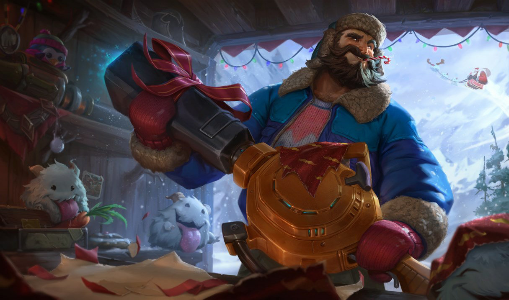
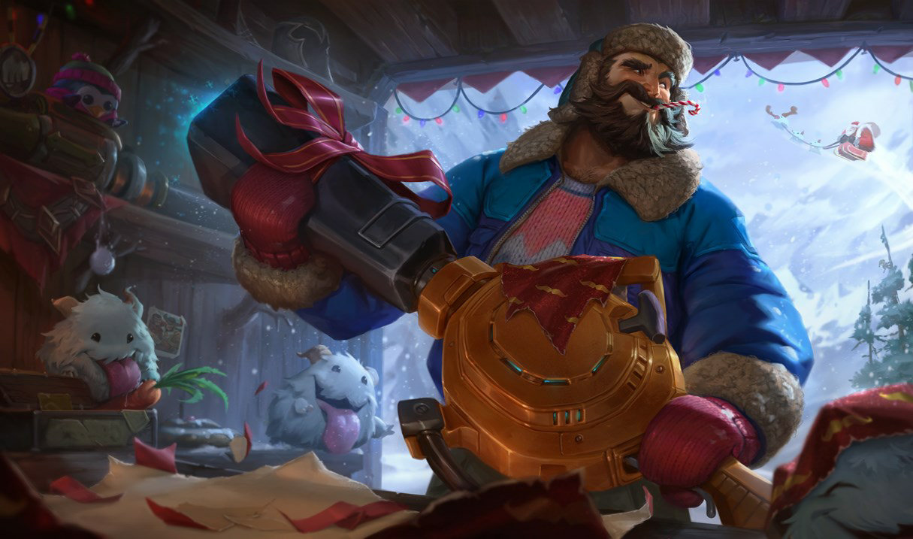

Twisted Fate is an infamous cardsharp and swindler who has gambled and charmed his way across much of the known world, earning the enmity and admiration of the rich and foolish alike. He rarely takes things seriously, greeting each day with a mocking smile and an insouciant swagger. In every possible way, Twisted Fate always has an ace up his sleeve.
Graves fires an explosive shell that detonates after 2 seconds, or 0.2 seconds if it strikes terrain.
Graves fires a smoke canister at the target area creating a cloud of smoke that reduces sight range. Enemies caught in the initial impact are dealt magic damage and have their movement speed reduced briefly.
Graves dashes forward gaining an Armor boost for several seconds. If Graves dashes towards an enemy champion, gain two stacks of True Grit instead. Hitting enemies with basic attacks lowers the cooldown of this skill and refreshes the resistance boost.
Graves fires an explosive shell dealing heavy damage to the first champion it hits. After hitting a champion or reaching the end of its range, the shell explodes dealing damage in a cone.
 
